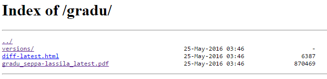

Writing my master’s thesis has been one of my main projects since September last year. Luckily, the end is near and my thesis is finished soon. At the start of my project, I wanted to come up with a solution where I can locally edit LaTeX files with Texmaker and at the end of a writing session push the changes to Git repository. After that the system would automatically compile Latex to pdf and publish the pdf file to the webserver automatically. Advantage of this is that I can provide my supervisors single URL which always points to the latest of the thesis. With right packages installed, LaTeX can be done in Linux command line. This means the task can be automated with Jenkins.
Defining the Jenkins build job
I like to keep my LaTeX sources in Git repository for proper version control. So, first thing to do was to install Git plugin for Jenkins. I used web hooks in GitHub to trigger the build after every commit to the repository. I created a new freestyle project, selected Git from the source code management section and provided URL to my repository. I also selected “Poll SCM” option from Build Triggers section without specifying the interval. This enables the ability to use GitHub web hook to trigger the build job. The only build step is to execute build.sh script which is located in the repository. The script will take care of compiling LaTeX sources to pdf, creating diff files and transferring the output pdf file to a remote server. The main idea of the script is taken from a GitHub Gist, but I can’t remember the author, so I can’t credit him/her. Below are contents of my build.sh.
#!/bin/sh
TEX_FILE_NAME=main
REMOTE_HOST=address of remote hosts
REMOTE_USER=remote user
REMOTE_DIR=path to remote directory
# Save the current commit id and cut it
CURRENT=`git rev-parse HEAD | cut -c -10`
# Compile the LaTex stuff
pdflatex -interaction=batchmode $TEX_FILE_NAME.tex > /dev/null
bibtex -terse $TEX_FILE_NAME
pdflatex -interaction=batchmode $TEX_FILE_NAME.tex > /dev/null
pdflatex -interaction=batchmode $TEX_FILE_NAME.tex
# Create versions dir if it does not exist
ssh $REMOTE_USER@$REMOTE_HOST "mkdir -p $REMOTE_DIR/versions"
# Create a folder for the new build
NOW=$(date +"%d%m%Y-%H%M")
OUT_DIR=$REMOTE_DIR/versions/$NOW-$CURRENT
ssh $REMOTE_USER@$REMOTE_HOST "mkdir $OUT_DIR"
# Move the compiled pdf to the output directory (versions dir)
scp $TEX_FILE_NAME.pdf $REMOTE_USER@$REMOTE_HOST:$OUT_DIR/gradu_seppa-lassila_$NOW-$CURRENT.pdf
# Get diff and copy to remote server (versions dir)
git diff HEAD^ HEAD | pygmentize -l diff -f html -O full | ssh $REMOTE_USER@$REMOTE_HOST " cat > \"$OUT_DIR\"/diff-\"$CURRENT\".html "
# Move the compiled pdf to the output directory (lastest version, root dir)
scp $TEX_FILE_NAME.pdf $REMOTE_USER@$REMOTE_HOST:$REMOTE_DIR/gradu_seppa-lassila_latest.pdf
# Get diff and copy to remote server (latest version, root dir)
git diff HEAD^ HEAD | pygmentize -l diff -f html -O full | ssh $REMOTE_USER@$REMOTE_HOST " cat > \"$REMOTE_DIR\"/diff-latest.html "
To summarize, the script:
- defines some helper variables (details omitted)
- compiles LaTeX files to pdf
- creates the directory for old versions if it does not exist in the remote server
- creates subfolder for this current build in the remote server
- transfers the compiled pdf file to the subfolder in old versions directory
- calculates diff file between this commit and the commit before that. Uses pygmentize for pdf formatting. Pipes the output over ssh to the remote server.
- transfers compiled pdf to the root directory. This file is always the latest version
- likewise, calculates and formats diff file to the root directory
For build to be successful, correct LaTex packages need to be installed. In Ubuntu, texlive packages are a good starting point. Authentication to the remote server is done with ssh keys, so the password does not need to be provided.
Result and conclusion
The result is following directory structure on the web server:

The versions directory contains subfolder for each commit. That subfolder contains the PDF and diff files.
All in all, configuring Jenkins took some time, but it was worth it in my opinion. That’s because this is a kind of fire-and-forget solution and now I don’t everytime need to send the latest version to my supervisors.